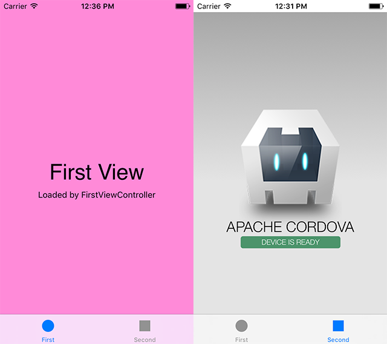

Integration of Cordova into a native iOS project

Disclaimer: it is the translation of my article that was written in Russian some time ago. All mentioned versions of software might be outdated now. But anyway, it can be helpful :).
Continuing the small series of posts "Crosswalk Project — a replacement for Android WebView", it makes sense to solve a similar task for iOS. Cordova project was choosen as the base layer for integration because it has a bigger feature list and fit better for the current task.
Both solutions Cordova and Crosswalk are based on WKWebView in the version for iOS. Because of this fact, it is not an honest replacement for system WebView but just an extension.
The main language of a test project is Swift but for any project based on Objective-C all steps will be similar. However, there is no need to do the latest step for adaptaion of a Cordova project for using with Swift.
NB! Crosswalk project has a simple guide where are listed all necessary steps how to integrate it with help of Cocoa Pods and how to use the major Cordova plugins with possibility of their extension.
There are 2 options for integration of Cordova to your application:
- Manual integration
- Integration with help of Cocoa Pods
NB! Actually, there is one more simple option. You will get a working Xcode project when you set up of the environment for Cordova. This project can be used separately from Cordova for further development but you should know that this project is written on Objective-C.
Manual integration of Cordova
Firstly, I am going to show the first option and add Cordova with necessary components manually. This option a little bit harder but more flexible and allow to use the latest versions of cordova-ios and plugins regardless of pod's creators.
My work environment looks like this:
- Xcode 8.3.2, Swift 3.1
- Cordova 7.0.1, Cordova iOS 4.4.0
- MacPorts 2.4.1
- npm 4.6.1
Setting the environment
Initially, you need to install and configure Cordova project itself and a few of necessary utilities. Installation is quite simple and described in details in Cordova documentation. I will stop on a few steps which are important for the demo project.
1. Install the package manager npm which will help us to install Cordova itself and essential plugins (to install npm I have used another package management system called MacPorts):
sudo port install npm42. Install Cordova project:
sudo npm install -g cordovaYou can install cordova-ios only in the same way:
sudo npm install -g cordova-iosThica can be helpful if you are not going to work with different platforms. However, it will be less comfortable to use commands in console in that case. For instance, you have to type:
cordova-ios/bin/createinstead of of a short version of the command:
cordova createNB! All packages which are installed with help of npm can be located in this directory: /opt/local/lib/node_modules/.
3. The next step is to create the test Cordova project and add target iOS platform:
cordova create cordova_full
cd cordova_full/
cordova platform add iosAll necessary files will be placed into the directory cordova_full/platforms/ios/. An equivalent set with minimal differences can be gotten if you prefer to use cordova-ios.
NB! You can choose the application name and the bundle identifier when set up the project. More details are given in Cordova documentation.
4. Additionally, you can install plugman utility to work with Cordova plugins:
sudo npm install -g plugman5. For the purposes of the test project I am going to install 2 specific plugins to support work with console and status bar. It will be very helpful for debugging etc. To install these Cordova plugins you have to change current directory to iOS resources directory and run 2 commands in console:
plugman install --platform ios --project . --plugin cordova-plugin-console
plugman install --platform ios --project . --plugin cordova-plugin-statusbarNB! For those who want to build an app based on Ionic Framework and use its projects templates — you can do all the same steps.
Creating the project
1. Tabbed Application from Xcode was choosen as the base for the test project. This test project can be found on github with all related resources.
The requirements are Cordova iOS 4.4.0, iOS 9.0 and above.
2. Move necessary resources to the test project:
- the directory with CordovaLib cordova_full/platforms/ios/CordovaLib/
- the directory with installed plugins cordova_full/platforms/ios/HelloCordova/Plugins/
- Cordova configuration file cordova_full/platforms/ios/HelloCordova/config.xml
- the directory with resources for the web-applciation cordova_full/platforms/ios/www/
NB! Check the settings of the Xcode project when you added CordovaLib. Remove CordovaLib files in the tab Build Phases → Compile Sources to resolve building conflict.
NB! When you are adding the directory www/ you must use option "Create folder references" to let resources be placed in the default way for Cordova.
3. The next task is to set up the test project for successful building:
- add flag -ObjC to Build Settings → Other Linker Flags
- add the following paths to Build Settings → Header Search Paths
"$(TARGET_BUILD_DIR)/usr/local/lib/include"
"$(OBJROOT)/UninstalledProducts/include"
"$(OBJROOT)/UninstalledProducts/$(PLATFORM_NAME)/include"
"$(BUILT_PRODUCTS_DIR)"- add CordovaLib to Build Phases → Target Dependencies
- add libCordova.a to Build Phases → Link Binaries with Libraries
NB! You have to add the whole string with with quotes to Header Search Paths.
Your setup is complete now if you are creating Objective-C project.
4. Adaptation for Swift. Cordova iOS project is implemented initially in Objective-C programming language and there are no known plans regarding porting to Swift for this moment. There exist an unofficial port but it is not done yet.
However, there does not exist conceptual issue to use Cordova in the project where used Swift programming language. It is just necessary to add Bridging Header to connect Swift world with Objective-C universe.
Just create .h file (for example, Bridging-Header.h) in the test project to achieve that:
#ifndef Bridging_Header_h
#define Bridging_Header_h
#import "CDVViewController.h"
#endif /* Bridging_Header_h */In addition, add the path where it is placed to Build Settings -> Objective-C Bridging Header:
CordovaEmbedded/Libraries/Bridging-Header.h5. Finally, we can use Cordova WebView. For example, create SecondViewController which extends CDVViewController instead of UIViewController. So the second tab in the test application will be replaced with an fully featured Cordova application.
6. A few words abour Cordova plugins. Initially we added 2 plugins:
- to show debug messages in Xcode console
- towork with system status bar
The first plugin gives us ability to render messages in Xcode debug console in a proper way like that:
CordovaEmbedded[31857:638683] Received Event: devicereadyThe second one allows to configure status bar, to set style, color etc.

The configuration of the plugins can be changed in config.xml file. The default style of status bar in this Xcode template is transparent so we can change it and get transparent bar for the first tab (default one) and in solid color for the second one (Cordova application tab). This can prove that the project is configured properly and ready to further development.
Integration with help of Cocoa Pods
1. To illustrate configuration of Cordova via CocoaPods we can use the same Xcode template - Tabbed Application. The test project can be found on github.
2. Use pod init to create pod file and add all pods there:
pod 'Cordova' # Cordova framework and plugins
pod 'CordovaPlugin-console'
pod 'cordova-plugin-camera'
pod 'cordova-plugin-contacts'
pod 'cordova-plugin-device'
pod 'cordova-plugin-device-orientation'
pod 'cordova-plugin-device-motion'
pod 'cordova-plugin-globalization'
pod 'cordova-plugin-geolocation'
pod 'cordova-plugin-file'
pod 'cordova-plugin-media-capture'
pod 'cordova-plugin-network-information'
pod 'cordova-plugin-splashscreen'
pod 'cordova-plugin-inappbrowser'
pod 'cordova-plugin-file-transfer'
pod 'cordova-plugin-statusbar'
pod 'cordova-plugin-vibration'
pod 'cordova-plugin-wkwebview-engine'
pod 'phonegap-ios-template' # Cordova template NB! I added all plugins because they are used into phonegap-ios-template template. Practically, you can add only necessary plugins but you have to change template's config.xml.
3. Install pods with pod install command and open created .xcworkspace. Now you need to do step 4 from the previous section to adapt the project for Swift.
4. There is an issue with configuration and you may see that build system will not find all necessary headers during the building process. To solve this issue you need to add pods root (c recursive flag) to Build Settings → User Header Search Paths:
"${PODS_ROOT}"5. — 6. To check how the test project works you can repeat steps 5 and 6 from the previous section. It should work the same.